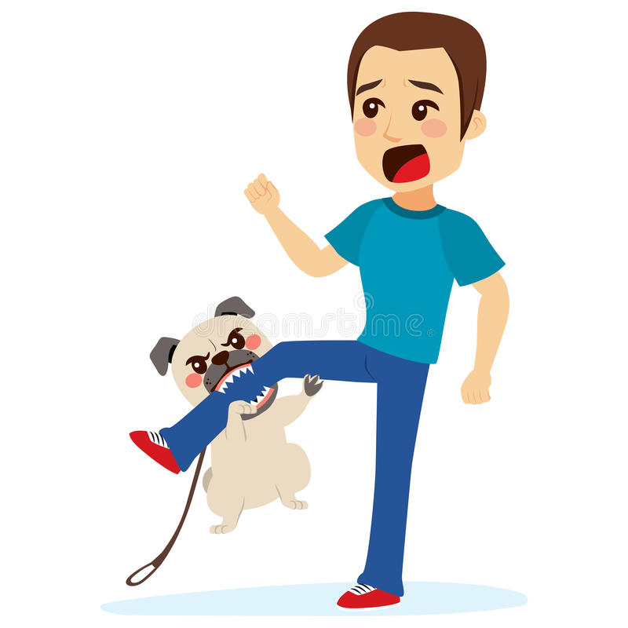

How to Stop Puppy Biting
Updated: Apr 12, 2022 | BLOG
Puppies are adorable, but they also have razor sharp teeth! So how can you handle puppy biting? Here are some
things you should know, and tips on what to do (or not do!)
P.S.- if you need some individual support, book a puppy training session!
Yes, puppies do go through a teething period. But most of your puppy's mouthing is based on a desire for
attention (and fun!)
We don't recommend saying "Ouch" or yelping to limit your puppy's mouthing- all of this can increase the
biting because your puppy is getting your attention!
Puppy mouthing isn't something that'll go away right away, but you can reduce most of it fairly quickly!
Your puppy isn't being aggressive- they want to play and get attention, and don't yet understand that humans
don't like this kind of play. **NOTE: if your puppy is biting you in other contexts (not just
play/attention), PLEASE reach out to us or another qualified professional!
OK, let's get to the big steps to stop puppy biting!
PREVENT
Many of our puppy biting episodes are predictable- they happen at the same time of day, or usually on the
couch when you try to cuddle, or when you're trying to work on something. So one of our best strategies is
to prevent the biting before it happens! We've all seen a toddler having a temper tantrum in the grocery
store and thought "that kid probably missed a nap!" So think of a biting puppy as a toddler- what can we do
to prevent the tantrum in the first place?
Maybe your puppy is tired and needs a nap, or needs to go for a walk before dinner. Maybe they can't handle
couch privileges yet, or need something good to chew on around 3pm. Look for predictors of biting, and help
give your puppy something else to do to help them calm down! This also means giving them lots of appropriate
chewing and enrichment throughout the day. (As an Amazon Associate, Every Dog earns from qualifying
purchases.)
TEACH AN ALTERNATIVE
We talk a lot about "default behaviors"- things our puppies can do on their own that we really like! Great
examples are sit, laying down, or making eye contact- these are things that are easy, calm, and we can
reward them pretty much anytime. In fact, we recommend having some treats (or kibble!) nearby to give
throughout the day when you notice your puppy making the choice to do one of these calm behaviors. Your
puppy should learn "If I want attention and treats, I should try XYZ." We reward these behaviors ALL THE
TIME until they become major habits for your pup. If you're not sure what default behaviors to try, Schedule
a private consultation or check out our puppy classes!
*Note: Socialization is a HUGE part of raising a puppy. If your puppy is under 4 months, learn more about
socialization now. We also have some awesome puppy training resources on our Resources Page, as well as
great webinars on puppy training.
But what does this have to do with biting? See the next point!
REDIRECT
When it seems like your puppy might be starting to get mouthy, start redirecting to default behaviors! When
they make the choice to lay down, big reward. If they sit quietly, lots of praise and treats! If you can
bring them a toy and play tug with them, great! Remember, your puppy is trying to get your attention. And
even though it can be frustrating sometimes, they're just wee little and they NEED social time! So if your
puppy is choosing to do one of these awesome behaviors instead of chomping on you, take some time to play
with them or do some fun training. (Need some help with training? Book a private session or check out puppy
classes!)
DAMAGE CONTROL
Ok, so you missed puppy nap time, and your puppy is starting to nom on you. You've tried your default
behaviors, bringing a toy, and getting your puppy engaged in a more productive way- but puppy is in full on
Jaws mode and won't redirect. What now? Calmly remove yourself and your attention for a few seconds. If
they're biting your arm, pull it away. If you're on the couch, stand up. If they're nipping at your heels,
step over a baby gate or their exercise pen.
In these situations you're not saying anything or telling them no- you're just calmly removing yourself. We
generally recommend doing this for just a few seconds, and are ideally looking for them to offer a calm
behavior of some kind before we return (sit back down, come back in, etc). If your puppy is still too
excited and goes for chewing on you again, repeat. Here we're showing puppy that biting means the fun stops
and the world becomes boring- but if you do any of your default behaviors, treats and attention are
everywhere!!
Ok, final notes:
Consistency is key! If you sometimes follow these instructions, but other times you wave your arms around
and yell at your puppy to stop, they're probably going to keep playing the bitey game!
Remember, puppies NEED lots of attention. If they're biting frequently, there's a good chance they're not
getting enough mental stimulation throughout the day.
If you're finding yourself in the damage control step a lot, don't stay stuck in that cycle! Make sure you
go back to earlier steps and make sure they're working.
Stay calm! If you stick to your routine, you'll see a big decrease in the biting. But some of it may stick
around as your puppy learns and grows, so don't panic if they still have puppy moments!
Again, if your puppy is biting in other contexts (like when you approach your food bowl, when you try to
touch their paws, or anything that seems like not-play), PLEASE reach out ASAP.
Need some help with your puppy? Schedule a private consultation or check out our puppy classes!
Comments